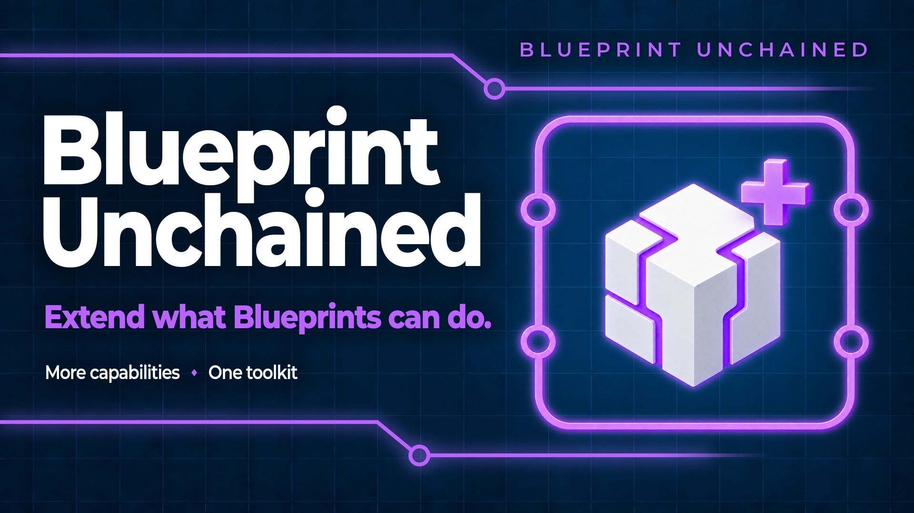

Blueprint Unchained gives you four tools for building your project in Blueprint:
The bundle includes the full version of each plugin. You can use any tool on its own or combine them. No C++ is required.
Install only the bundle in a project that uses Blueprint Unchained. It already contains all four plugins. Adding separate copies creates duplicate modules and classes, which can prevent the project from loading.
Each linked manual includes setup steps, a node reference, examples and troubleshooting.
Use these 85 nodes to control rotations in your graphs. For example, turn a turret towards a target, align an object with a surface or smooth rotation data from a tracked device.
The nodes work with quaternions, which represent 3D rotations without gimbal lock. They cover creating, combining, comparing and blending rotations. All angle pins use degrees. Rotation operations normalize their inputs, and the library supports thread-safe Animation Blueprint updates through BlueprintThreadSafe.
The Details panel lets you edit quaternion values as Euler angles, as an axis and angle, or as X, Y, Z and W components. You can turn this display off in Editor Preferences.
Read the Blueprint Quaternion manual.
Use a subsystem for shared data and logic. A Game Instance subsystem can keep quest progress between level changes. A Local Player subsystem can hold separate data for each split-screen player.
Create Engine, Editor, Game Instance, World, Tickable World or Local Player subsystems in Blueprint. Unreal Engine creates and removes their instances. Blueprint events let you control what happens when a subsystem starts, updates or stops.
The plugin finds your subsystem Blueprints and includes them when packaging the game. Project Settings lets you choose search folders or list classes directly. Blueprint nodes also let you register classes and search for new ones while the game is running.
Read the Blueprint Subsystems manual.
Use an Instanced Struct when entries need different kinds of data. For example, weapons and potions can use different structs while sharing one inventory array.
Each Instanced Struct value holds one struct at a time. An array can contain values of different types. The nodes use Unreal Engine's own FInstancedStruct type, so existing data remains compatible.
Choose the struct type directly on Get and Set nodes. Other nodes let you check types, create default values, compare values and find or filter array entries. You can also export a value to text and read it back. Structs made in Blueprint and C++ are supported.
Read the Blueprint Instanced Struct manual.
Create pages for project settings and editor tool preferences. For example, keep a server address in Project Settings or a placement tool's grid size in Editor Preferences.
Create a Blueprint Project Settings asset and add variables with Config Variable enabled. Compile it to create the page. Use Get Settings in other Blueprints to read the values.
The values are stored in standard ini files. Choose shared project settings, personal settings for each developer, or Saved storage for values a packaged game needs to write. Save Settings, Reload Settings and Reset Settings To Defaults manage those values.
Set a fixed Section Id to keep saved values when you move or rename the Blueprint. The plugin finds settings Blueprints and includes them when packaging the game.
Read the Blueprint Project Settings manual.
The subsystem keeps the queue between level changes.
Create a World subsystem to receive rotation commands. Store each command as an Instanced Struct. For example, one struct can hold a target quaternion and another can hold an axis and angle.
Use quaternion nodes to apply the command. Keep the rotation as a quaternion between operations when you do not need a Rotator.
Create a Local Player subsystem to store each player's tracking calibration. Use quaternion smoothing on incoming device rotations. If devices need different calibration data, keep each device's data in an Instanced Struct.
The settings page saves the values to the selected ini file. With the default storage, they are in DefaultGame.ini, where your team can review changes in source control.
You can develop on Windows, macOS and Linux. The runtime modules also support Android. Editor and UncookedOnly modules are excluded from packaged games.
Blueprint Subsystems and Blueprint Project Settings include the Blueprints they discover during packaging. Check their search settings if you limit discovery to specific folders.
The Quaternion and Instanced Struct tools add code. They do not contain assets that need extra packaging rules. The bundle does not include an example project or ready-made Blueprint assets.
Check the project's installed plugins. If you use Blueprint Unchained, remove the separate copies of Blueprint Quaternion, Blueprint Subsystems, Blueprint Instanced Struct and Blueprint Project Settings. Keep the bundle or the individual plugins in each project.
You can use one tool without using the others. Each tool is also sold separately. The bundle includes the full features of every tool.
Open that tool's manual and read its Troubleshooting section. When reporting the problem, include the tool's name, Unreal Engine version and plugin version.
For help, bug reports or feature requests, contact tomasz.klin+blueprintunchained@gmail.com.
Include your Unreal Engine version, plugin version and the name of the tool you are using. This manual covers plugin version 1.0.0.